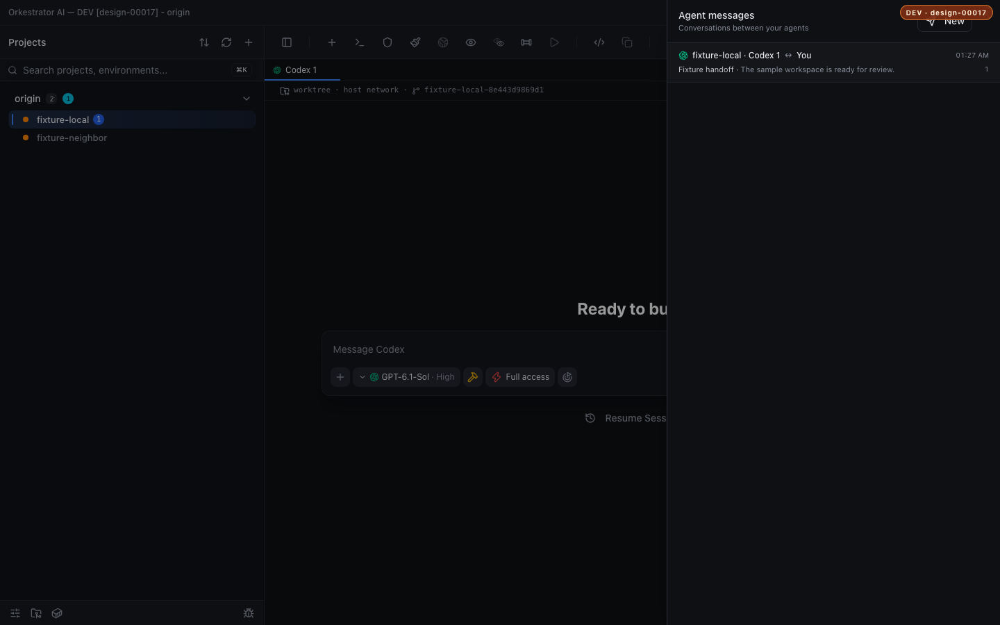
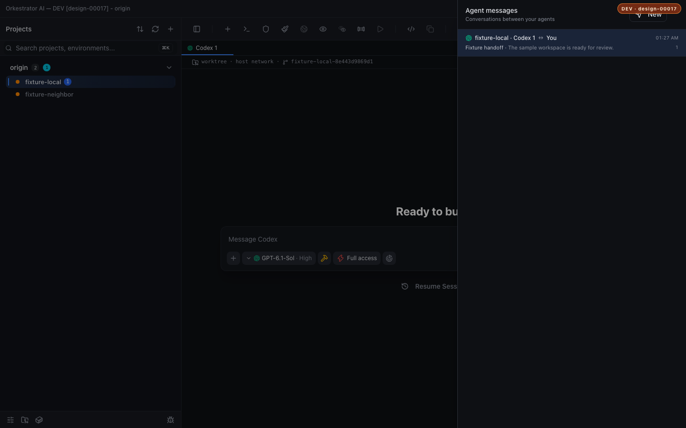

Design tasks / 00017
00017 · Use the blue hover tokens beside blue selections
Problem
At the time of the audit, hover:bg-zinc-* (27),
hover:bg-foreground/[…] (10), hover:bg-muted (63) and
hover:bg-accent (19) outnumber the documented hover:bg-hover (5)
and hover:bg-environment-hover (2). Menus and selects use
focus:bg-zinc-800/80.
Find every instance
grep -rnE --include=*.tsx "hover:bg-(zinc-[0-9]+|foreground/|muted|accent)" apps/web/src | grep -v "\.test\."Scope
| Where | What |
|---|---|
apps/web/src/components/ui/dropdown-menu.tsx, select.tsx, context-menu.tsx
|
menu item highlight |
apps/web/src/components/chat/SuborkGroup.tsx:81,159,204 |
foreground wash rows |
apps/web/src/components/agent-mail/AgentMailPanel.tsx:263 |
foreground wash row |
apps/web/src/components/projects/GitHubRepositoryPicker.tsx:122 |
muted wash row |
sidebar, files panel and any list that shows a blue selected row |
the cases the rule actually targets |
Approach
-
Find rows and lists that can show a blue selected state and give them
hover:bg-hover(orenvironment-hoverfor environment rows). - Decide the menu question below before touching
ui/. -
Leave toolbar ghost buttons on
hover:bg-elevated; that is the documented ghost behavior.
Decisions
The chosen option is recorded in Notes.
Menus and selects (no selected row inside them)
Required evidence: before and after
Every slot needs a before image (captured first, before editing any code) and an
after image. Use the same profile, fixture data, theme, viewport and zoom for both.
Save PNGs under design/images/00017/ using the exact file names shown. See
How to capture.
Sidebar with one row selected and another hovered desktop 1440×900
Select an environment and hover its neighbor.

A foreground-wash list row on hover desktop 1440×900
Hover a subork group row or a mail panel row.


Open dropdown menu with a highlighted item desktop 1440×900
Open any dropdown and hover an item.


Out of scope
- Ghost toolbar buttons.
- Selection color tokens.
Verification
mise run test:logged -- --name web-typecheck -- bun run --cwd apps/web typecheck
NODE_ENV=test mise run test:logged -- --name ui-menus -- bun --cwd=apps/web test src/components/ui --parallel=2 --only-failures
mise run format:check
mise run lint
React tests in this repo need NODE_ENV=test in build shells. Real-browser
check: use a throwaway dev:test profile named design-00017, never
a production instance.
Acceptance checklist
-
Before images captured on unmodified code for every slot, and committed under
design/images/00017/. - After images captured after the change, with the same profile, data, theme, viewport and file names, and committed beside the before images.
- Every image slot on this page shows a picture (the evidence badge reads “6 / 6”).
- I have looked at each pair and written what changed, and anything that did not change that should have, in Notes.
- Hits were classified in Notes, and each decision is recorded with the option chosen.
-
Type-check and the owning tests pass.
mise run format:checkandmise run lintpass. - The browser check includes a page reload and, for layout-affecting changes, the narrow viewport.
- DESIGN.md or PRODUCT.md updated if needed: Add the menu exception to Colors → Selection if kept.
- Status set to Done on this page and in the index.
Notes
Hover review
-
The mail conversation row, subork group and child rows, and GitHub repository picker
results use
hover:bg-hover. The subork’s trailing action button and the separate mail recipient picker use their existing neutral washes. -
Available file and folder rows in the Files tree use
hover:bg-hover. File selection and folder drop targets keep their own fills. The Changes lists open diffs and have no selected row. The row-level Move to… button is a separate action. -
Pull request and feature list rows use
hover:bg-hoverbeside their blue selection. The shared sidebar already usesenvironment-hoveron environment rows andhoveron project rows. - The remaining audited washes apply to neutral selections, transient suggestions, standalone actions, or controls such as tabs, form inputs and toolbar buttons.
Menu decision
Kept the neutral highlight for dropdowns, context menus and selects without a blue selected row. A blue menu highlight would extend the tint to neutral popovers. Documented the exception in Colors → Neutral → Selection.
Image comparisons
Captured the before images on b2c91abb9, then repeated the same interactions
after the change. Both sets use the same local fixture and synthetic mail in the isolated,
headless design-00017 profile, in dark mode at 1440 × 900, 100% zoom and device
scale factor 1. The browser reloaded before each capture run. The profile ran with host
seeding, agent credentials, and host reachability checks disabled.
-
Sidebar. The blue selection gradient on
fixture-localand the blue hover onfixture-neighboridentify the two states in both images. - Mail list. The hovered Fixture handoff row changes from a grey foreground wash to the blue hover token.
- Dropdown. By activity has the same neutral highlight in both images. By project remains the checked option.